La UE aprovechó la referencia de Clinton a posibles sanciones comerciales por motivos laborales para ganar el apoyo de esos países.
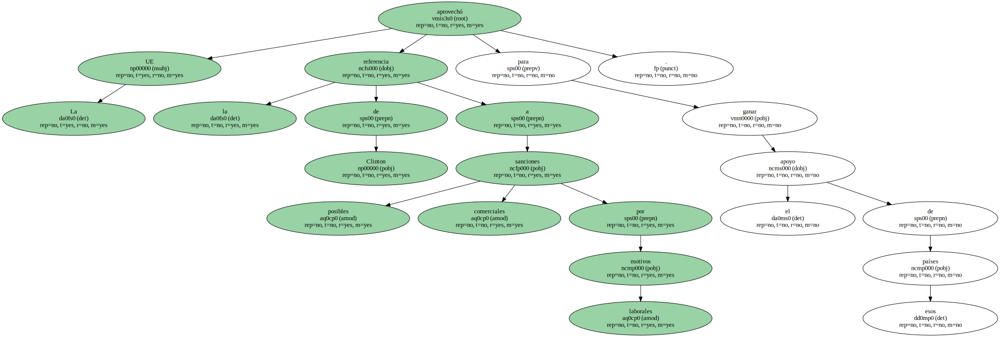Los Quince sólo defienden crear un foro de trabajo permanente entre la OMC y la Organización Internacional de Trabajo para reforzar el respeto de los derechos laborales y excluye la posibilidad de sanciones.
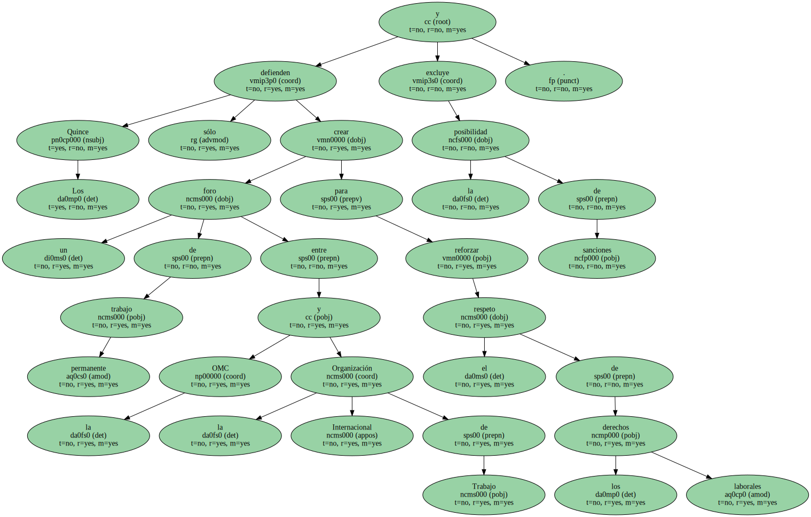Esta fórmula sería aceptable para los países en desarrollo , ya que no establece compromisos.
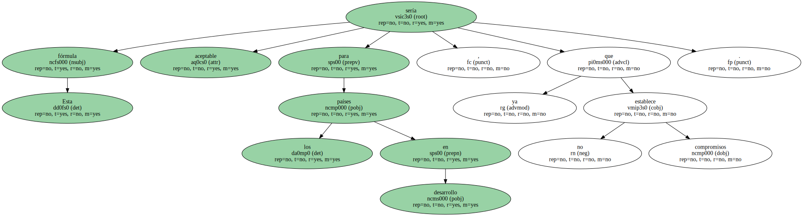La policía y la Guardia Nacional impiden más concentraciones ante el centro de congresos.
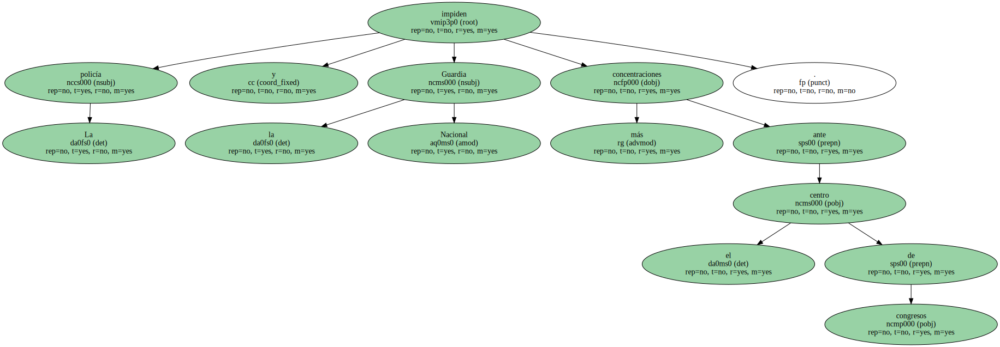El alcalde avisa de que evitará más incidentes violentos , que acabaron con 240.

El alcalde avisa de que evitará más incidentes violentos , que acabaron con 240.

Seattle amaneció ayer bajo un estricto control policial , tras los violentos incidentes protagonizados en la tarde y la noche del Martes ( madrugada de ayer en España ) por diversos grupos radicales que lograron bloquear la apertura de la conferencia ministerial de la Organización Mundial de Comercio ( OMC ).
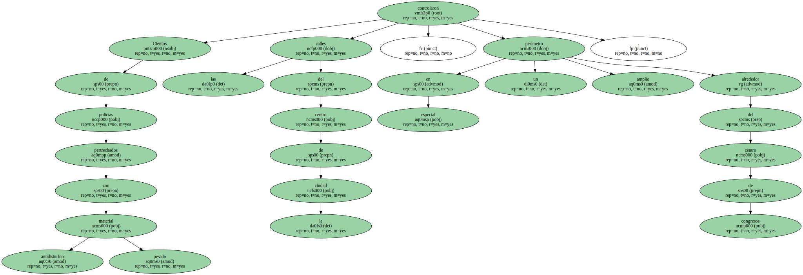Cientos de policías pertrechados con material antidisturbio pesado controlaron las calles del centro de la ciudad , en especial un amplio perímetro alrededor del centro de congresos.
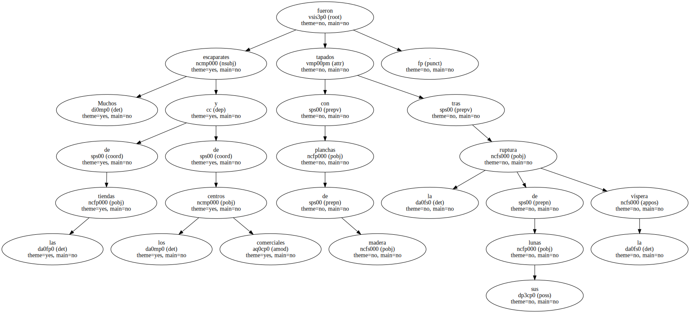Muchos escaparates de las tiendas y de los centros comerciales fueron tapados con planchas de madera tras la ruptura de sus lunas la víspera.
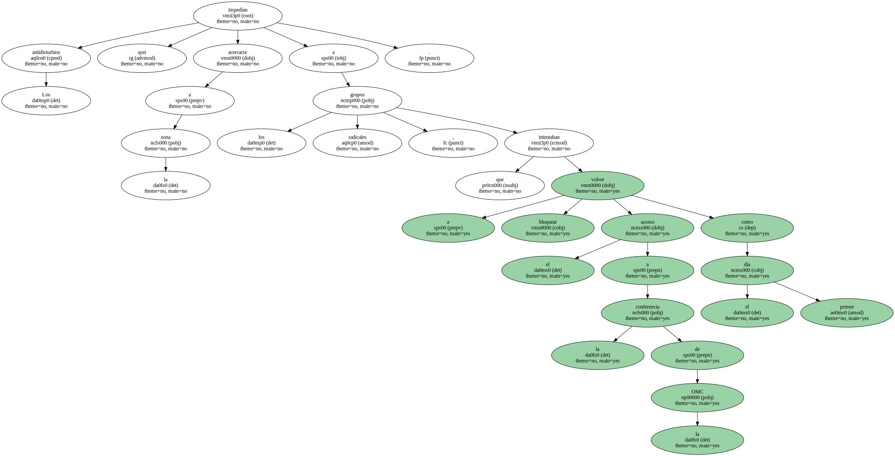Los antidisturbios impedían ayer acercarse a la zona a los grupos radicales , que intentaban volver a bloquear el acceso a la conferencia de la OMC como el primer día.
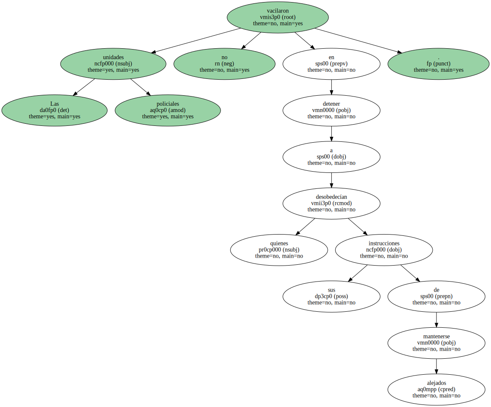Las unidades policiales no vacilaron en detener a quienes desobedecían sus instrucciones de mantenerse alejados.
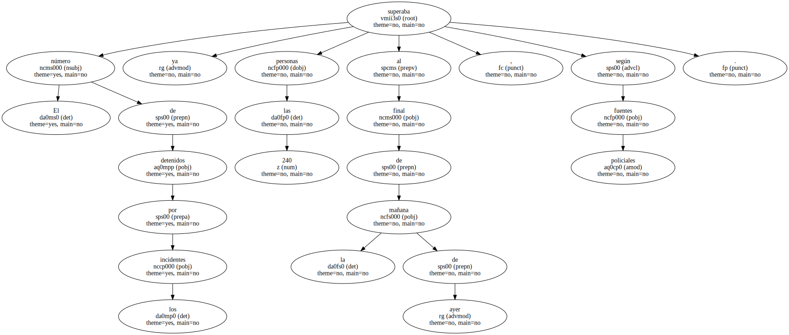El número de detenidos por los incidentes superaba ya las 240 personas al final de la mañana de ayer , según fuentes policiales.

Pese al dispositivo de seguridad , grupos de jóvenes , algunos disfrazados de tortugas o de otros animales , intentaron concentrarse en el centro de la ciudad para formar cadenas humanas.
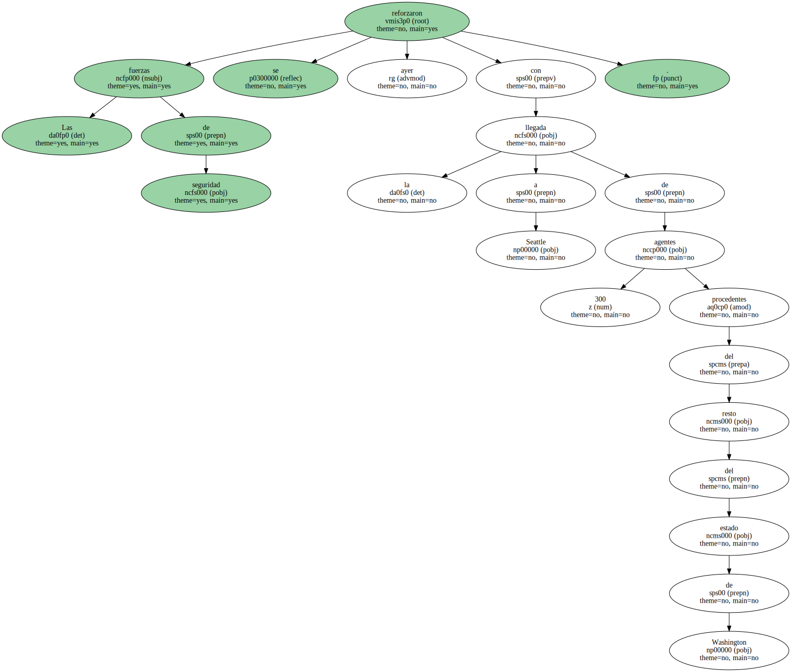Las fuerzas de seguridad se reforzaron ayer con la llegada a Seattle de 300 agentes procedentes del resto del estado de Washington.
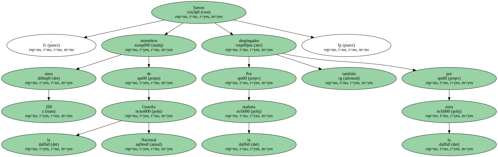Por la mañana , unos 200 miembros de la Guardia Nacional también fueron desplegados por la zona.
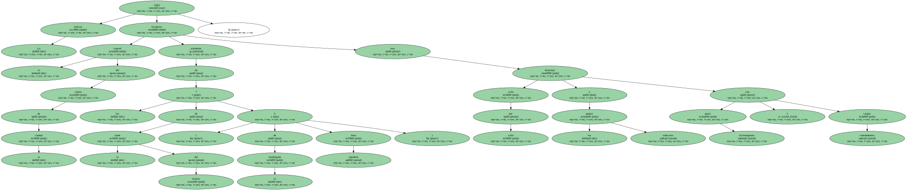La policía logró recuperar el control del centro de la ciudad alrededor de las 7 de la tarde del martes ( 4 de la madrugada hora española ) tras desalojar calle por calle a los grupos radicales con gases lacrimógenos y contundentes cargas.
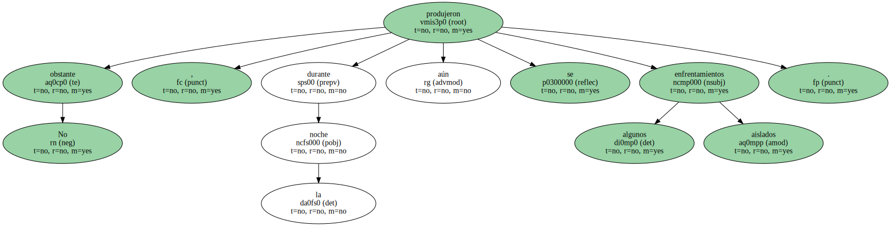No obstante , durante la noche aún se produjeron algunos enfrentamientos aislados.
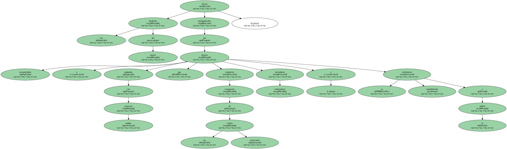Los incidentes del martes fueron protagonizados por jóvenes encapuchados y equipados con máscaras antigás que rompieron escaparates de los centros comerciales , incendiaron contenedores y se enfrentaron repetidamente a la policía.
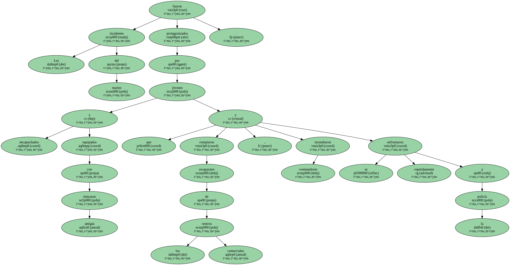Tras la disolución de la masiva y pacífica manifestación convocada por sindicatos , asociaciones ecologistas y organizaciones no gubernamentales ( ONG ) contra la OMC y la " mundialización de las multinacionales " , Paul Schell , alcalde de Seattle , declaró a media tarde del Martes el estado de emergencia y decretó el toque de queda en el centro de la ciudad.
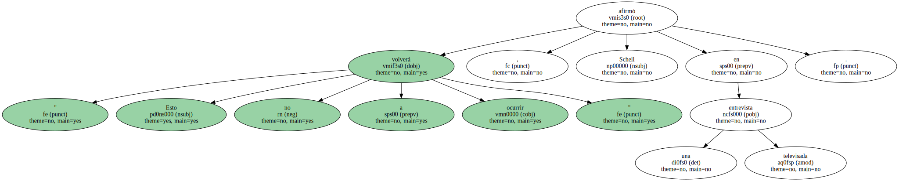" Esto no volverá a ocurrir " , afirmó Schell en una entrevista televisada.
" Vamos a utilizar cada medio de que dispongamos y actuaremos inmediatamente contra cualquier desmán en las calles " , añadió.
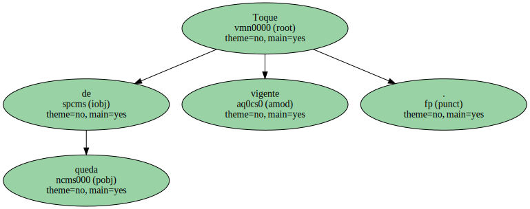Toque de queda vigente.
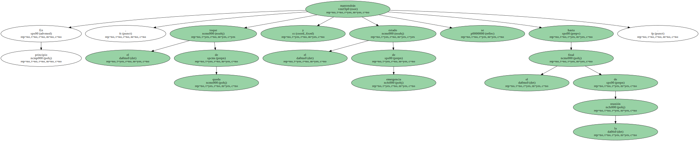En principio , el toque de queda y el estado de emergencia se mantendrán hasta el final de la reunión.
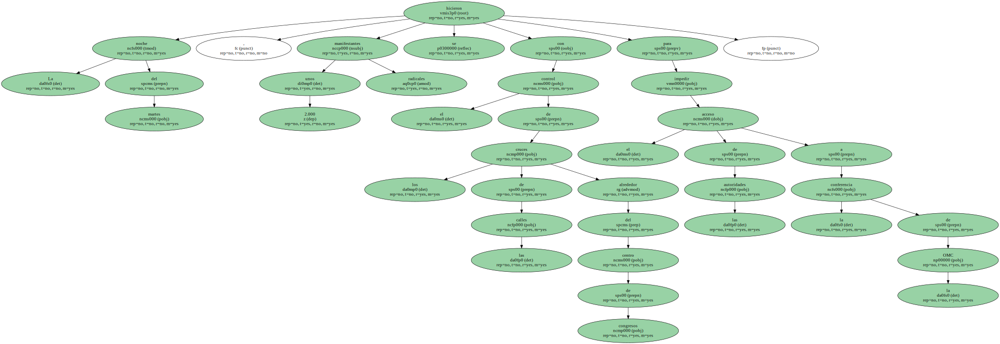La noche del martes , unos 2.000 manifestantes radicales se hicieron con el control de los cruces de las calles alrededor del centro de congresos para impedir el acceso de las autoridades a la conferencia de la OMC.
La policía , que tardó varias horas en controlar la situación , cargó con gases lacrimógenos para desalojar a esos grupos de las inmediaciones del centro de reuniones.
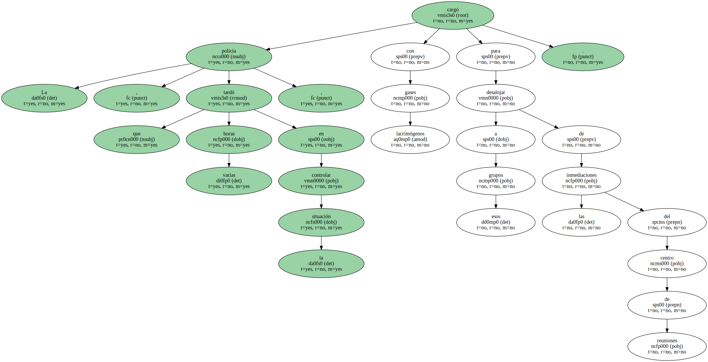